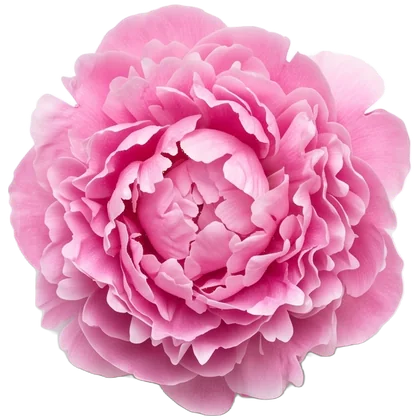
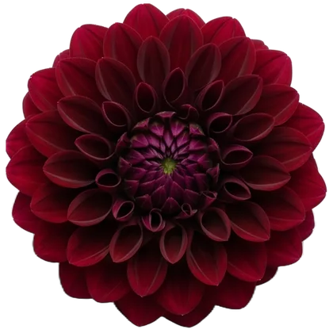
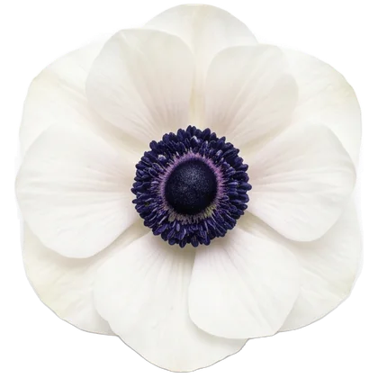
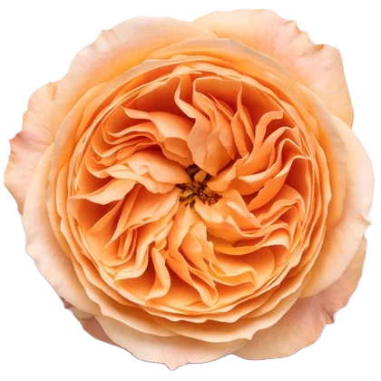
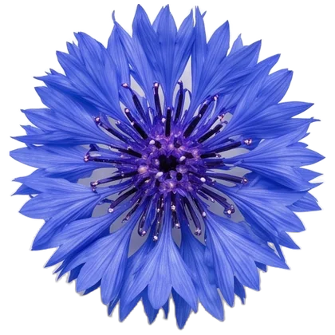
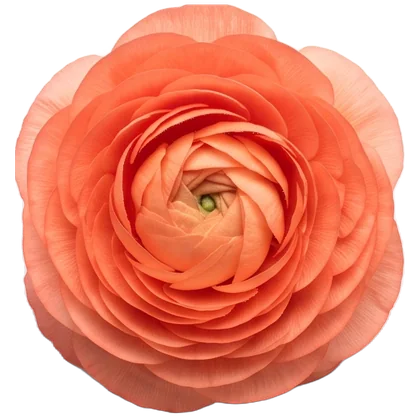
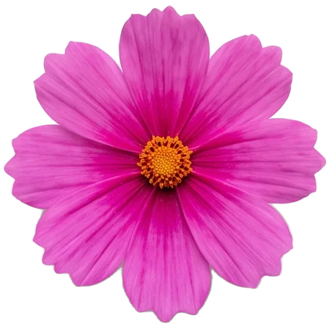
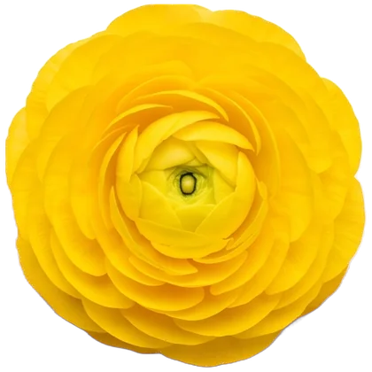
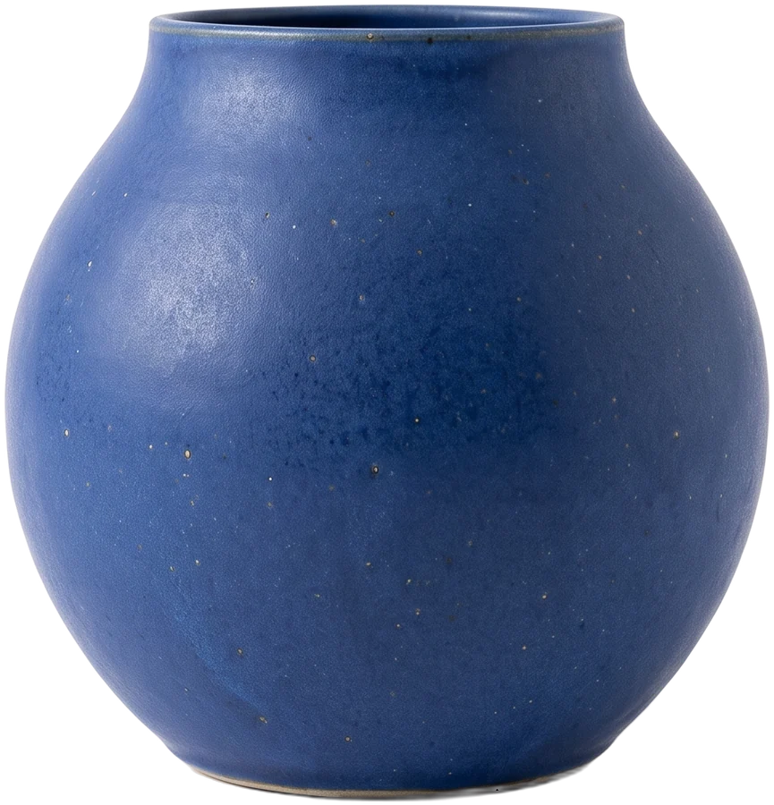

Každý den
Kytice do kuchyně, pro mámu, jen tak. Přijďte si vybrat, nebo nám řekněte barvu a my ji svážeme.
Květinářství · Liberec
Kytice, které se nevejdou do jedné ruky.
Chyťte květ a hoďte jím. Klepnutím přidáte další.

Jiřiny
Sasanky
Růže
Chrpy
Pryskyřníky
Krásenky
Vážeme z toho, co

právě kvete, ne z katalogu. Každá kytice je trochu jiná, protože každé ráno přijdou jiné květy.01 — Co vážeme
Kytice do kuchyně, pro mámu, jen tak. Přijďte si vybrat, nebo nám řekněte barvu a my ji svážeme.
Kytice pro nevěstu, korsáže, stoly i obřad. Nejdřív si sedneme nad Vaši představu, teprve potom nad květiny.
Věnce a smuteční kytice v klidu a bez spěchu. Zavolejte, poradíme, co se hodí, a doručíme je na místo.
Květiny na recepci, dárky pro klienty, výzdoba akcí. Domluvíme se jednou a o zbytek se postaráme.
02 — Sestav si kytici
Klepněte na květ a dejte ho do vázy. Hotovou kytici pošlete nám a my ji svážeme z toho nejhezčího, co ten den máme.

Přejeďte přes kytici, zavane vítr.
03 — Co právě kvete
Mimo sezónu se zeptejte. Často se dá sehnat i to, co venku zrovna nekvete.
04 — Objednat
Napište, pro koho kytice je a co má říct. Ozveme se s návrhem a domluvíme se na zbytku.